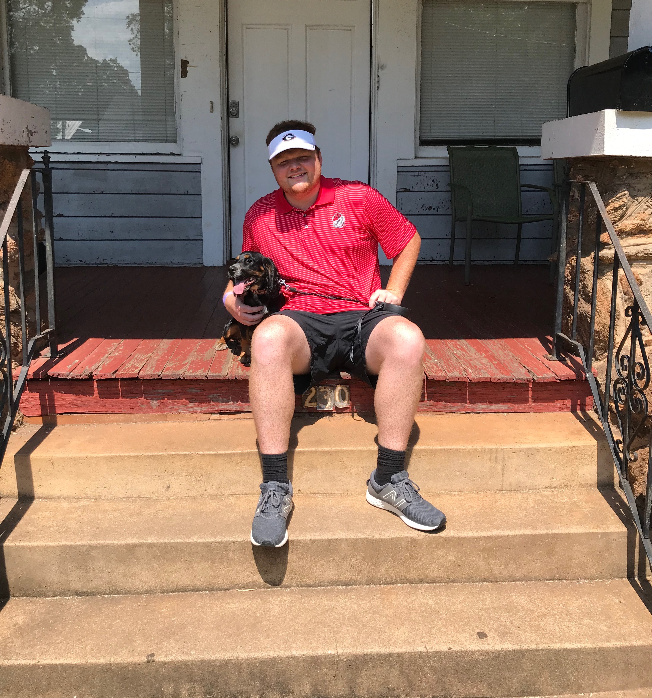

Brooks Pinson's WebpageThis webpage is all about me and my favorite things. Pictured above is me and my dog, Demi | A Snapshot of My LifeHi! I am Brooks Pinson. I am a Senior Agribusiness major here at The University of Georgia. Along with being a student here, I am a member of the Alpha Gamma Rho Fraternity, commonly known as AGR. During the week, I am either going to school, or going to work at my job in the Horticulture department of UGA, where I tend to a branch of greenhouses. If I'm not doing either of those, I am most likely hanging out with my friends, my dog, or playing video games. During the fall semester, my absolute favorite thing to do is spend my Saturdays cheering for the Dawgs. Demi, the dog in the picture, is one of my most favorite things in the whole world. We play fetch, chase, and hide and seek, but her favorite game is to chew up every sock she can find. To get to know me even more, click this link to see my Facebook page. |